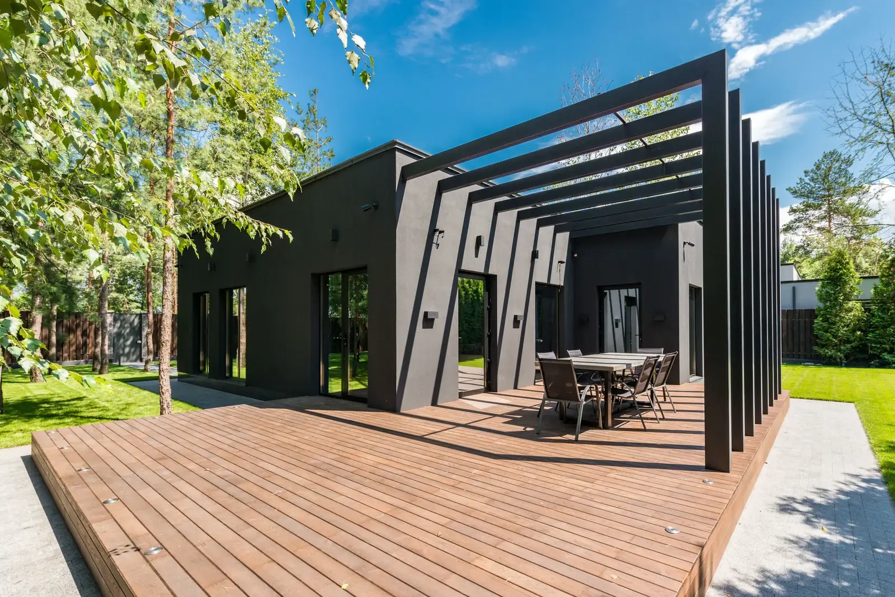
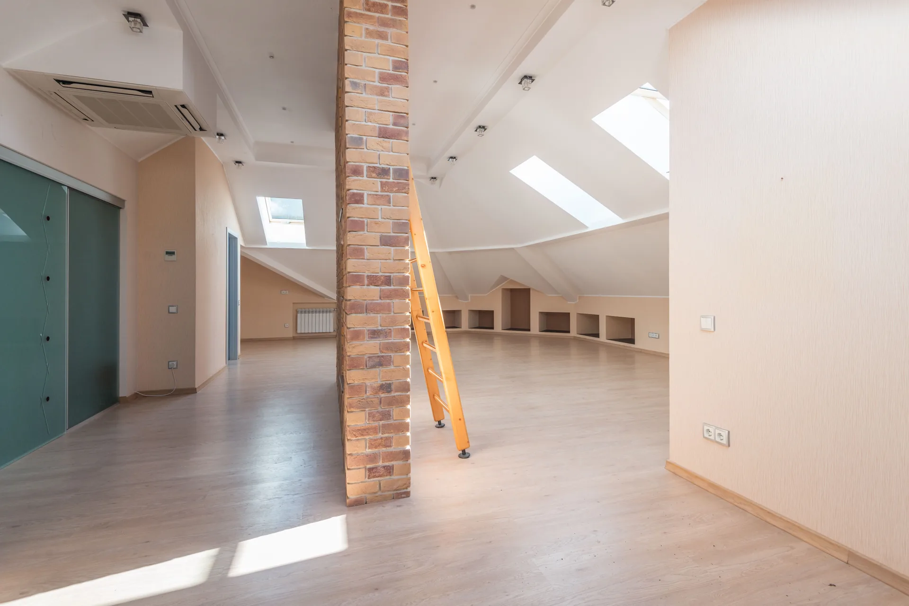

Leistungen
Vier Aufgaben, die wir von der ersten Skizze bis zur Abnahme begleiten.
Alle Leistungen umfassen die Leistungsphasen 1 bis 8 der HOAI: vom ersten Gespräch über Entwurf, Bauantrag und Ausschreibung bis zur Bauleitung. Auf Wunsch übernehmen wir auch einzelne Phasen.
-
Neubau
Ein Einfamilienhaus auf einem Grundstück, das Sie kennen oder gerade kaufen wollen. Wir beginnen mit dem Ort: Wo steht die Sonne, wo die Nachbarn, wo der Baum, der bleiben soll. Daraus entsteht ein Entwurf, den wir mit Ihnen in zwei oder drei Runden festlegen, bevor der Bauantrag geschrieben wird.
Danach schreiben wir die Gewerke aus, vergleichen die Angebote und leiten die Baustelle bis zur Abnahme. Beispiele: Haus am Deich, Haus im Wald.
-
Umbau und Sanierung
Ein Haus, das zu Ihnen passt, aber nicht mehr zu Ihrem Leben: zu viele kleine Zimmer, zu wenig Licht, ein Dach, das erneuert werden muss. Wir sehen uns die Substanz an, sagen Ihnen, was tragfähig ist und was nicht, und planen den Umbau so, dass das Haus seinen Charakter behält.
Bei Sanierungen kümmern wir uns um Dämmung, Fenster und Haustechnik in einem Zug, damit Sie nur einmal bauen. Beispiel: Umbau Hofstelle.
-
Anbau und Aufstockung
Mehr Platz auf dem Grundstück, das Sie schon haben. Ein Anbau öffnet das Haus zum Garten, eine Aufstockung schafft ein ganzes Geschoss, ohne dass Sie Gartenfläche verlieren. Beides planen wir so, dass Sie während der Bauzeit im Haus bleiben können.
Vorgefertigte Holzbauteile verkürzen die Bauzeit auf wenige Wochen. Beispiele: Anbau Gartenhaus, Aufstockung Reihenhaus.
-
Bauberatung vor dem Grundstückskauf
Bevor Sie ein Grundstück oder ein altes Haus kaufen, sehen wir es uns mit Ihnen an. Wir prüfen Bebauungsplan, Baulasten und Erschließung, schätzen, was auf dem Grundstück gebaut werden darf, und was Bestand und Umbau kosten würden.
Sie bekommen eine schriftliche Einschätzung, bevor Sie beim Notar sitzen. Diese Beratung rechnen wir nach Stunden ab, sie verpflichtet Sie zu nichts Weiterem.

